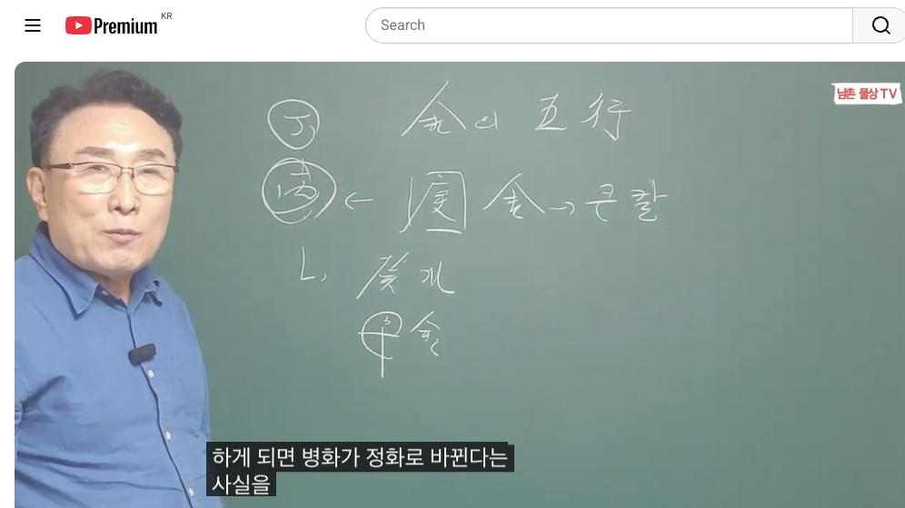
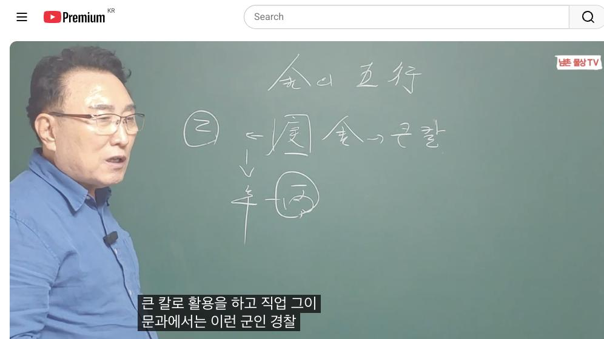
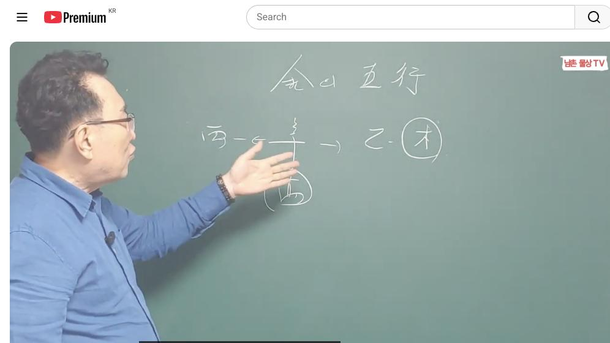

남촌물상TV 전체 문서 › 동영상 V0024
[기본원리]11강 경금신금 일간 돈되는 직업

| 문서 번호 | V0024 (동영상) |
|---|---|
| 영상 URL | https://www.youtube.com/watch?v=WviNJCBEzkg |
| 영상 ID | WviNJCBEzkg |
| 게시일 | 2023-11-20 |
| 길이 | 13:41 (821초) |
| 조회수 | 3,049회 (수집 시점 기준) |
| 카테고리 | People & Blogs |
| 자막 | ko (자동생성) |
| 수집 시각 | 2026-08-30 17:03 (KST) |
영상 설명 (YouTube 설명 원문 그대로)
경금신금 일간 돈되는 직업, 재물운 상승 방법 #경금 #신금 #일간 #돈되는 #재물운
전체 자막 (295구간 · 타임스탬프 클릭 시 해당 장면으로 이동)
[0:01][음악]
[0:04]자 안녕하세요 지난번에이어서 어
[0:07]오늘은 그 금에 대한 오행을 가지고
[0:10]설명해 드겠습니다이 금에 대한
[0:18]오행은 자 금의 오행이라는 것은 두
[0:21]가지 종류가 있죠 자
[0:23]경금과
[0:25]뭐했어요
[0:27]경금과 신금
[0:29]있다
[0:33]두 가지가 있다 그럼 물상론 우리가
[0:36]아 얘기할 때 어떤 표현을 하느냐
[0:39]경금은 우리가 표현할 때 큰 칼로
[0:42]표현하지 큰
[0:43]칼 자 그다음에 신금은 작은
[0:48]칼 자 작은 칼로
[0:51]보는데 금미의 용도가 어떻게 다르냐이
[0:54]말이요 다른가 그러면 이제 큰 칼로
[0:56]사용하는 칼과 작은 칼로 사용하는
[0:59]칼로 본다 우리 오행에서 금 여러가지
[1:02]뭐 보석이다 광석이다 이런 얘기 많
[1:05]하는데 우리
[1:07]물에서는 이미 큰 칼로 단정된 걸로
[1:10]규정을 해서 보자 그 말입니다 그래서
[1:12]경금은 큰 칼로 단정을 지었다면 이미
[1:16]칼이 만들어져 있는 상태로 보고 금도
[1:19]작은 칼로 봤을 때는 이미 만들어지는
[1:22]작은 칼로 봐라 그 말이에요 그럼
[1:24]용도가 우리가 여러가지 생각해 보면
[1:26]큰 칼을 쓸 때와 작은 칼을 쓸
[1:29]때 구별이 돼야 될 거 아니겠어요
[1:32]그러면 어느 칼이 많이 쓸까요 큰
[1:34]칼을 많이 쓰요 작은 칼을 많이 써요
[1:37]작은 칼을 많이 쓰게 되죠 그래서
[1:39]우리는 부에 쓰는 칼 메시지 의사가
[1:42]쓰는 칼 뭐 여러 가지 용도가 많죠
[1:44]자 이런 것을 우리는 쉽게해서 그
[1:47]칼의 용도를 구별해 쓴다라고시면 된다
[1:50]자 그러면 이제 신금에 대해서 경금의
[1:53]대해서 이제 일단은 한번 연구를 해
[1:55]보자 경에
[1:57]대해서 그러 칼은 이미 만들어져 있는
[2:01]불이 또 온다고 봅시다 화기운이 또
[2:03]온다고 봐봐요 한번 화기운이 온다고
[2:06]보면은 어떤
[2:07]현상이어요 이미 칼이라 자체는
[2:10]만들어져 있어요 전에 보면 경금
[2:12]일주가 경금 일주가 이거 관이
[2:15]되겠죠이 관이 왔을 때 그럼 어떤
[2:18]것이야 고전에서는 명예를 추구하고 뭐
[2:21]하고 굉 좋다고 하지만은 우리
[2:23]물상에는 이미 칼로 만들어져 있는
[2:26]칼로 보기 때문에 다시 풀리면 칼 칼
[2:29]자체가 칼날 고 그래서 일단 우리
[2:35]금주은 병화가 올 경우 화가 올
[2:39]경우이 경우는 칼이 높기 때문에
[2:42]100% 안 좋다고 보시면 돼요
[2:44]그래서 운에서 이런 경우 운에서
[2:47]만약에 제거를 할 수 있다 운이
[2:50]된다면 핵심이 뭐냐 계수가
[2:53]와서 계수에 와서 태양을 흐리게
[2:57]만들든지 그렇지
[2:59]않으면 금
[3:01]와서 신금이 와서 합을 하든지
[3:05]이렇게 해서이 병화를 흐리게 만들 수
[3:09]있는 것이 대한다 그럼 뭐야 신금의
[3:12]병실 하보 그럼 화 아닙니까 이렇게
[3:13]가죠 여기 화에는 정화의 화로 바뀌죠
[3:19]우리는 천간합의 원리에에서 합을
[3:23]하게 되면 병화가 정화로 바뀐다는
[3:26]사실을 배웠다 그 말이에요 그러면이
[3:29]정화는 이 경금을 녹일 수가 없다라고
[3:32]우리는 설명을 되었다 그렇기
[3:35]때문에이 두 가지가 오게 되면 병화가
[3:38]있어도 된다 괜찮다 그런데 또 핵심이
[3:43]또 있어요 자이 병화는 어디서 놀기를
[3:46]좋아한다 그랬어요 병화는 병화는
[3:49]임수의 놀기를 좋아한다라고 했 임수의
[3:51]놀기를 좋아한다 그럼 이럴 때 만약에
[3:53]사주에 임수가 있다고 가정합시다 와
[3:56]임수은 왔어요 그러면 금은이 병화가
[4:00]을 녹이는게 아니라이 임수에는 것이
[4:03]우선이에요 그러 임수에 떠서 빛을
[4:07]비춰주면 이때는 소위 가장 좋은 좋은
[4:11]관으로서 명예 올 수 있던 운으로
[4:14]물상 표현하시면 된다 금의 활용
[4:17]이렇게 보시면 돼요 그래서 금을 쓰는
[4:20]용도는 이런 식으로 쓸 수 있고
[4:21]활용하는 방법이 이런 것이다 그래서
[4:23]화가 왔을 때 금이 안 좋은 관계 또
[4:26]제거할 때 왔을 때 아까
[4:29]임수와 수와 신의 병식 합을 제거할
[4:32]때 그리고 임수가 있을 때 임수가
[4:35]병화를 떠서이 병화에 떠서 빛을 비춰
[4:37]주는 것은 직접적인 영향을 미치지
[4:40]않기 때문에이 병화 와도 괜찮다
[4:43]이것을 이해하시면 된다 이게이
[4:45]물상론이 경금 핵심이에요 자 그럼
[4:49]경금은 하는 일들이 뭐겠냐 그 말이
[4:51]하는 일들이 소위 이제 카이라는 것을
[4:54]우리는 뭐라고 하냐 숙살 직권 사람을
[4:56]죽여서 사주는 권리를 우리는 뭐라
[4:58]숙살 권이라고 한다 그 말이에요
[5:00]그래서 만약에 경금 일주가 문과와
[5:04]해당이 된다면 뭘 할 거냐 법 자
[5:07]법이라 거예
[5:09]법 법이 법이 있어요 그래서 법과
[5:14]법과 그다음에 또 어떤 거야 법 금융
[5:18]경영 경제 이런 쪽에 얘기할 수 군인
[5:21]경찰 할 수가 있다 그러면 우리가
[5:24]크게 생각할 때 어떻습니까 법이라는
[5:28]법법 계약을 가도 법대로 간다 경금이
[5:32]쓸 수 있는 거예요 신금을 쓸 수
[5:34]있습니다 그러나 법이란 큰 악구를
[5:36]봤을 법 국민 경제가 원칙이다 세
[5:39]가지 원칙인데 만약에 부분적으로
[5:41]설명을 드리자면 아까 군인 경찰 큰
[5:45]칼을 사용할수 장수가 사용하기 때문에
[5:47]우리는 군인 경찰로 표현할 수 있다
[5:49]그럼 만약에 연애 있고 자기가 을목
[5:52]있다 하더라도 국가의 자리에 경금이
[5:56]있고 내가 일간이 목이라 나는 제복이
[5:59]되고 여기는 뭐가 돼요 군인은이
[6:01]여기이 칼은 칼로 된다 그래서 국가에
[6:03]관련 일 한다 그럼 왜 국가에 관련일
[6:05]할까요이 네가 무슨 뭐 그 고전에 극
[6:08]모인데 이렇게 할 필요 그런 아무
[6:10]상관 없어요 그러면 천간 합의 원리에
[6:13]따라서 우리는 어떻게 할까요 여기가
[6:16]은력 합을 하게 되면 금으로
[6:19]바뀌죠이 신금은 병화를 끌고 있기
[6:22]때문에 병화는 우리 오행에서 뭐예요
[6:24]국가를 우리 국가는 병화를 치는 우리
[6:27]물론이에요 그래서 병화가 국의 일을
[6:30]하는 일이고 신금이 되면 나의 칼자
[6:33]되기 때문에 국가의 공직을 할 수
[6:35]있는 군인 경찰가 될 수 있다는 걸
[6:37]이해하시면 된다 이것이 우리 핵심적인
[6:40]경금이 어떤 국가적인 일을 하고 어떤
[6:42]일을 할 것이냐 그래서 큰 칼은 군인
[6:45]경찰들이 쓰는 칼이기 때문에 우리는
[6:47]큰 칼로 활용을 하고 직업 그이
[6:50]문과에서는 이런 군인 경찰 이런 것을
[6:52]통과할 수 있다고 보시면 된다 그러
[6:54]문과만 하냐 이과도 봐야지 그 이과는
[6:56]어떤 성향을 가지고 있을까요 이과는
[6:58]이제에 철을 다루기 때문에 철로 봤
[7:01]금속 기계 철광 뭐 이런 거 그
[7:05]체육은 수와 화가 있을 때 이럴 때
[7:07]우리는 그 체육도 소화한다이 관계를
[7:10]이해하시면 오행 중에서도 금이 경금이
[7:14]쓸 수 있는 역할과 이과 문과를
[7:16]구별해서 사용할 수 있는 법이 된다이
[7:17]말이에요 이것을 우리는 잘 이해하시면
[7:20]자 금의 경금이 활용할 수 있는
[7:23]방법이 뭐고 직업을 어는게 좋다는 거
[7:25]할 수 있는 거예요 그래서이 숙살
[7:28]직권을 가진 것은 카리라 거 뭐예요
[7:29]칼이란 거 칼을 잘못 쓰면 어떻게
[7:32]될까요 칼을 잘못 쓰게 되면 나쁜
[7:35]방향으로게 가기 쉽죠 그래서 반드시
[7:37]여기에는 뭐가 있어야 돼 칼자루가
[7:40]있어야 된다 그 말이에요 그러면
[7:42]칼자루도 큰 칼이기 때문에 을목이
[7:45]칼자 아니라 갑목의 칼 자로다이
[7:47]말이에 이런 경우는 이런 경우는
[7:50]사주에
[7:51]틀리죠 자
[7:54]만약에에 본인이 감목 주였다 그
[7:57]말이야 목일주 사주 이렇게 있다고
[8:00]그럼 감목 일주하고 보면은 금을 뭘로
[8:03]써요 이거는 이것을 나가 내가 칼
[8:06]자를 가지고 칼로 쓴다 말 국가 자리
[8:09]대기업 국가 자리 그럼 결과죠 칼로서
[8:12]쓰는 경우는 이거는 국가 공직이
[8:15]아니라 건설에 관련된 일을 하는
[8:18]직업으로 본게 좋다이 말이에요 을해서
[8:21]을경 을해서 신금이 해서 병화를
[8:23]끌어온 것은 국가의 관계된 일을
[8:26]한다고 보고 자격증 갖는 걸
[8:28]본다면 목과 경금의 관계는 칼과 칼
[8:32]자루 역할 하기 때문에 이걸 우리가
[8:35]건설에 관련된 쪽으로 이해하시면
[8:36]좋다이 말입니다 이것을 한가지 잊으면
[8:38]안 돼요 그래서 건설의 직업과 또
[8:41]본인이 아까 을목을 합했을 때는 군인
[8:47]경찰할인 방법을 잘 이해하시면 된다
[8:50]그리고 아까 병화 왔을 때 금을
[8:53]녹이면 칼날이 물러지는데 계수 와서
[8:56]병화를 가려주고 그다음에 합으로
[8:58]정화를 만들어주고
[9:00]임수가 떴을 때 병화는 임수 뜨기를
[9:02]좋아해서 빛을 피줄 때 성진 명예를
[9:05]얻으 있다라고 전적을지면 된다 그
[9:07]말이에요 그래서 경금은 이렇게
[9:09]이해하시면 가장 쉬운 방법이 된다 자
[9:12]그다음에
[9:14]그다음에 신금의 관계를 보자 신금의
[9:17]관계 자 신금은 신금은 작은 칼자루
[9:22]을목이
[9:23]필요하겠죠 자 을목이 필요하니까 딱
[9:26]자기 맞는까 작은 칼은 우리 이걸
[9:29]갖다 뭐라 냐 여러 가지 있죠 이것도
[9:31]법이 경찰도 되고 하지만은 의학 생
[9:35]공학 뭐 다 됩니다 이런 경우는
[9:36]그래서 금속 예까지 된단 말이에요
[9:39]그래서 그 약도 된다는 얘기는 신금의
[9:42]뿌리가 유금이 된다 그래서이 금은
[9:45]입으로서 의학의 개통 할 수 있다고
[9:47]보는 것이고 기술적인 손 기술도 된다
[9:50]그 말이에요 그래서 병신이 병화는 뭐
[9:53]친구 뭘고 병화를 고기 때문에 국과
[9:55]자격증을 가질 수 있는 거예요 우리
[9:58]상에서 병신은 국가 자격증으로
[10:00]관주하기 때문에 이건 자격증을 가질
[10:02]수 있는 사주다 그럼
[10:04]만약에이 큰 칼 작은 칼을 가지고
[10:06]움직 뭐라 하냐 검사 판사 이런
[10:10]사람을 얘기하는 거 의사 이런 걸
[10:12]크게 받고 좋게 기 때 그렇게 한단
[10:13]말이에요 그러면 칼을 쓰는 국가
[10:16]공직자로서 하는 것은 경화를 끌어다
[10:19]쓰기 때문에 국가 공직자가 되는
[10:21]거예요 그래서 우리는이 국가 공직을
[10:23]얘기해도 반드시 병하고 하이 병하고
[10:26]연계 있기 때문에 이걸 이해하셔야 돼
[10:28]그래서 신금의
[10:30]관계는 국가 자격증을 가지고 써진
[10:33]사주 그럼 본인들이 만약에 검사
[10:36]판검사 어디 자 전부 다이 숙살
[10:39]지권에 관련된 일을 한 사람이 된다
[10:41]그 말이에요 그래서 작은 칼을 쓰는
[10:43]용도는 굉장히 많죠 그래서 우리는
[10:46]물에서 합을 할 때는 자격증을
[10:50]의미하는 것이고 신금을 어떤 칼로서
[10:53]쓸 때는 법 법이 뭐예요 검사 판사를
[10:58]얘기하시고 합으로 쓴 것은
[11:01]자격증문의 변호사를 얘기할 수 있다
[11:03]이제 이런 걸 가지고 우리는 쉽게
[11:05]얘기하고 할 수 있고 또 유금 금의
[11:08]뿌리가
[11:14]금이기업 금속 작은 부품 금속 기계
[11:19]이런 것을 얘기해서 우리는 응용하시면
[11:22]된다 그 말이에요 그래서 신금의
[11:25]경우는이 을목의 칼자루와 병화를 끌은
[11:28]국가 자격증과 이런 것을 활용할 수
[11:31]있는 계기가 되면 굉장히 좋겠다 쉽게
[11:34]이렇게 활용하셔야 됩니다 그래서 우리
[11:35]물상에는
[11:36]신금의 경우는 이렇게 활용하는 방법을
[11:40]하시게 되면 사주를 구성하는데 아주
[11:43]좋은 구성이 된다 자
[11:47]그러면이 신금은 신금은 아까 화가
[11:50]오면 좋지 않다 그랬잖아요 작은 칼도
[11:52]화가 오면 좋지 않다 자 그러면이
[11:55]신금은 병화를 끌어다 쓰면 병 합의
[11:58]하잖아요 병 버래 그러니까 신금은
[12:01]관이 와도 병화 관이 와도 괜찮다
[12:03]얘기예요 근데 뭐가 무섭냐 결과적으로
[12:07]정화가 더 무서운 거지 정화의 관이
[12:11]오게 되면은 여기에이 신금을 녹일
[12:14]수가 있다 그럼 만약에 정화 일간이
[12:17]재물이 되겠죠 그럼 정 정화 일간이
[12:20]금이 재물인이 금을 녹일 수 있기
[12:22]때문에 한다 그러면 활용하는 방법은
[12:25]어떻게 해서이 칼자 이용할
[12:27]것인가이 정화에서 임수를 끌올 수
[12:30]있게 자 임수는 어떤 거냐 해하고
[12:33]인연도 있수 있는 것이고 여러 가지
[12:35]방법이 있어요 그래서 정립한 목은
[12:38]우리가 고전에서 정림 한 목으로
[12:40]단정이 지었지만 우리 물상 로에서는
[12:42]어디다가 정림 한 목을 목으로 본다
[12:45]그 말이
[12:46]을목 그래서 을목이 작은 칼자루가
[12:49]되는 거예요 그래서 국과 자리에 정어
[12:52]있다면 관이 있다면 국과 자리에서
[12:56]임수를 끌어다 내 칼 탈 차로 씌워
[12:58]주기 때문에 이것도 소위 숙사 관련된
[13:01]이일을 할 수 있다라고 보면 된다
[13:02]이렇게 하 하시면 돼요 그래서 어
[13:06]병화는 합으로 자격증 관계를
[13:09]유지한다면 여기 정화는 정립 한
[13:12]목으로 나의 재물 역할을 해 수 있다
[13:14]금극목 재물 할 수 있다이 말이에요
[13:16]이런 것을 활용하게 되면 우리 물상
[13:18]론에서 금무 오행에서 경과 신금에
[13:22]활용하는 방법을 지금까지 설명을
[13:25]드렸습니다 자 앞으로 여러분들이
[13:27]계속해서 배울 건데
[13:29]아 제가 지금 금까지 있죠 나중에
[13:32]이제 임수와 계수 관계를 설명을
[13:35]드리고 아마 그 오행에 대해서는
[13:37]거기서 마감하려고 생각했습니다 다음
[13:39]시간에 다시 뵙겠습니다 감사합니다
칠판 원국 판독 (영상 프레임을 AI가 시각 판독 · 원판 대조 필수)
구분 불명
천간
丁
천간
庚
천간
乙
천간
癸
천간
甲
판독 신뢰도: 낮음
판독 노트: 사주판 없음. '金的 五行' 이론: (丁) (庚)←[庚] '金=큰 칼', 하단 乙·癸甲·甲金 표기 · 시점 3:25 · 해당 장면 보기↗
구분 불명
천간
乙
천간
庚
천간
辛
천간
丙
판독 신뢰도: 낮음
판독 노트: 사주판 없음. '金的 五行': (乙)←[庚] '金=큰 칼', ↓ 辛-[丙] 동그라미 · 시점 6:51 · 해당 장면 보기↗
구분 불명
천간
丙
천간
辛
천간
乙
천간
甲
판독 신뢰도: 낮음
판독 노트: 사주판 없음. '金的 五行': 丙←辛→乙·(木), 辛/甲 박스 하단. 금 오행 성격론 판서 · 시점 10:16 · 해당 장면 보기↗
자막은 YouTube에서 제공하는 한국어 자동음성인식(ASR) 트랙의 원문입니다. 고유명사·한자 용어·숫자 표기에 자동인식 특유의 오류가 있을 수 있어, 원문을 가능한 한 그대로 보존했습니다. 위에 칠판 원국 판독 섹션이 있는 영상은 화면 프레임을 AI가 시각 판독한 것으로 신뢰도 표기를 확인하고, 없는 영상은 화면 도표가 문서에 포함되지 않습니다.